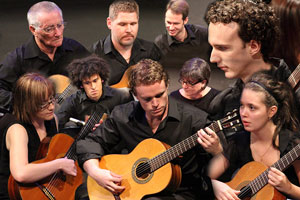

Events
- 
- SUNDAY VARIETY CONCERT
- Presented by Friends of the Theatre
- Music of Debussy, Ravel, Saint- Saens, Sibelius and others
- 2pm Sunday 26 April at Pimlico Performing Arts Centre
- Fulham Road
- For more enquiries please phone 4723 7879

- Aviva String Quartet
- Following the phenomenal success of their 2014 season, the superb foursome return with their first concert for 2015, bringing their signature style of classical and modern music to the masses in their own fresh and entertaining style.
- Featuring:
- Caroline Lloyd-Doolan on violin
- Susan Fraser on violin
- Jessica Winton on viola
- Ivy Wu on cello
- 2pm Sunday 14 June at C2 (CivicTheatre building)
- $25 Adult - $20 Concession - Children 12 and under free!
- Townsville Concert Band
- 2pm Sunday 28 June at C2 (Townsville Civic Theatre)

- Pimlico choir
- Voices of Pimlico
- 2pm Sunday 6 September at C2 (Townsville Civic Theatre)

- Townsville Concert Band
- 2pm Sunday 27 September June at C2 (Townsville Civic Theatre)

- Allegro Choir
- Conducted by Kerry Rehn
- 2pm Sunday 22 November at C2 (Townsville Civic Theatre)


- Aviva String Quartet
- Featuring:
- Caroline Lloyd-Doolan on violin
- Susan Fraser on violin
- Jessica Winton on viola
- Ivy Wu on cello
- 2pm Sunday 29 November at C2 (Townsville Civic Theatre)